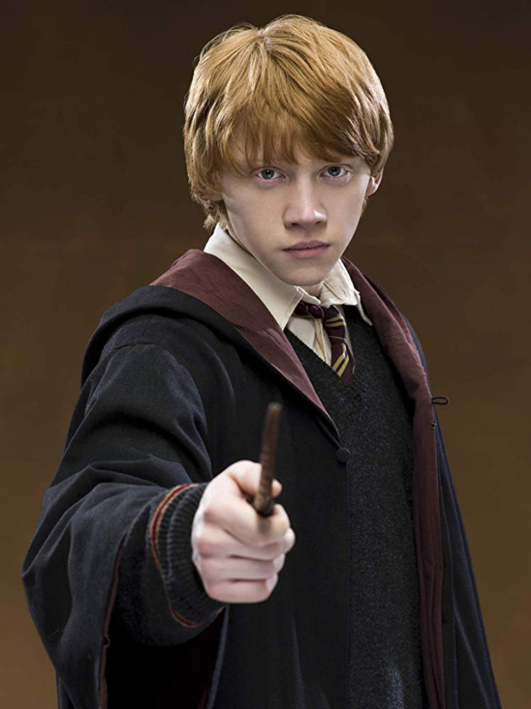

Emma Charlotte Duerre Watson (París, 15 de abril de 1990).
Fue elegida para interpretar a Hermione a la edad de nueve años. Debido a su trabajo en Harry Potter, ha sido galardonada con varios premios y se estima que ha ganado 26 millones de libras esterlinas. Incluso teniendo que conciliar los estudios y el rodaje, en junio de 2006, obtuvo el Certificado General de Educación Secundaria (General Certificate of Secondary Education o GCSE) con ocho A* (la más alta) y dos notas A (la segunda calificación más alta) ,138 lo que hizo que se convirtiera en blanco de burlas, pero ella lo vio como un elogio.139 En 2008 recibió tres A en su examen de niveles avanzados (A-Level o Advanced Levels) en Literatura inglesa, Geografía y Arte.16 Después de terminar la escuela secundaria, Watson tomó un tiempo para terminar el rodaje de Harry Potter and the Deathly Hallows,16 iniciado en febrero de 2009, antes de ir a la universidad.
Rupert Alexander Lloyd Grint (Harlow, 24 de agosto de 1988).

Es un actor británico, conocido por interpretar a Ron Weasley en la serie de películas de Harry Potter. Obtuvo dicho papel a los once años, después de haber participado anteriormente solo en obras de teatro escolares y grupos de teatro locales. Se ha proclamado fan de la serie de Harry Potter, así que estaba interesado en conseguir un papel en la película. Para su audición, envió un vídeo hecho por él mismo, en el cual, vestido como su profesor de teatro, cantó en forma de rap las razones por las que debían elegirlo para el papel. De esta manera terminó ganando el rol.
Daniel Jacob Radcliffe (Fulham, Inglaterra, 23 de julio de 1989).
es un actor británico, principalmente conocido por haber protagonizado la saga cinematográfica de Harry Potter. Fundamentalmente por ello, ha recaudado una fortuna de 23 millones de libras esterlinas (algo más de 27 millones de euros), parte de la cual ha destinado a organizaciones benéficas. A los dieciséis años se convirtió en la persona más joven en poseer un retrato en la National Portrait Gallery sin pertenecer a la familia real. El 13 de abril de 2006, su retrato –dibujado por Stuart Pearson Wright cuando el actor tenía catorce años– se dio a conocer como parte de la nueva exposición de apertura en el Royal National Theatre londinense y luego se trasladó a la National Portrait Gallery, en donde permanece actualmente.
Harry potter y el prisionero de azkaban wikipedia
Harry potter y el prisionero de azkaban filmaffinity
Libro
Harry potter fans
Harry Potter y el legado maldito es el guión oficial de la obra
de teatro Harry Potter and the Cursed Child de J. K. Rowling, John
Tiffany y Jack Thorne.
Es la octava historia publicada en la serie de libros de Harry Potter.
Fue publicado el 31 de julio de 2016 en inglés y en español el 28 de
septiembre del mismo año. Muchas librerías de todo el mundo fueron los
anfitriones de fiestas de lanzamiento de medianoche.

| Personaje | Actor | Edad | Ciudad de procedencia |
|---|---|---|---|
| Harry Potter | Steve Haggard | 38 años | Chigado, EE.UU. |
| Ginny Potter | Frances Grey | 45 años | Londres, Reino Unido |
| Albus Potter | Joel Meyers | 25 años | Nueva york, EE.UU. |
| Ron Weasley | David Abeles | 40 años | Los Ángeles, EE.UU. |
| Hermione Granger | Michelle Gayle | 52 años | Londres, Reino Unido |
| Draco Malfoy | James Howard | 44 años |